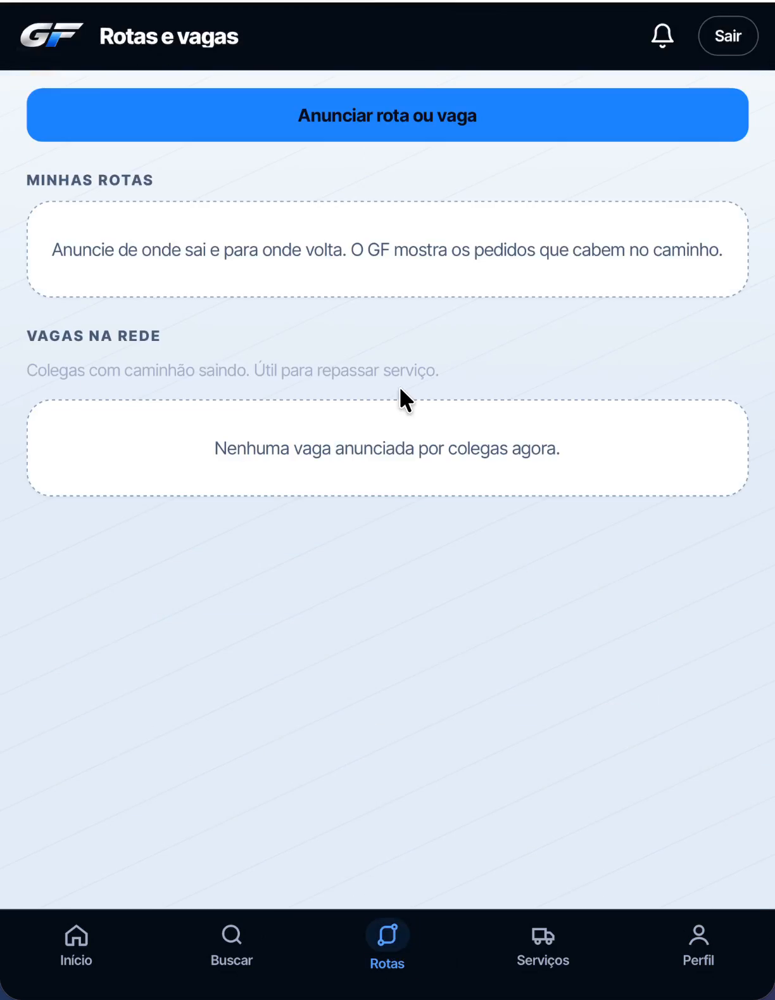
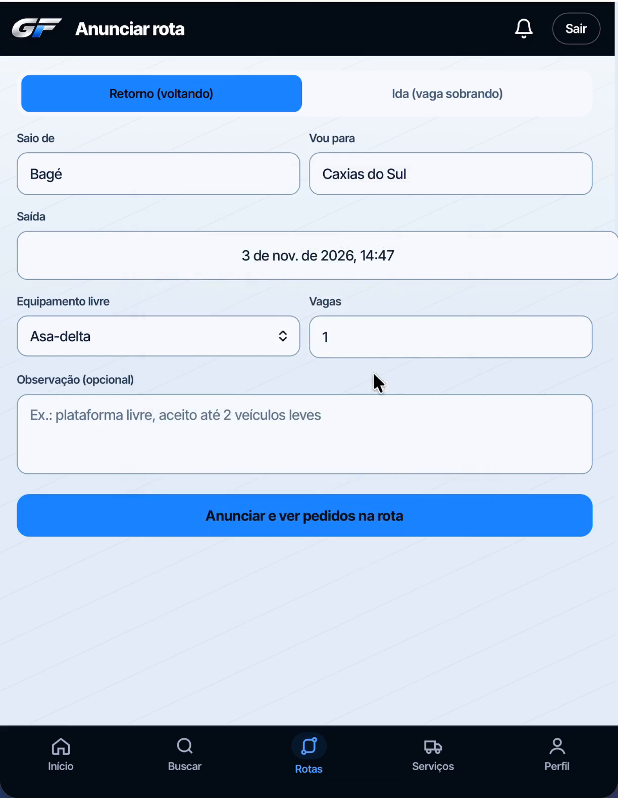
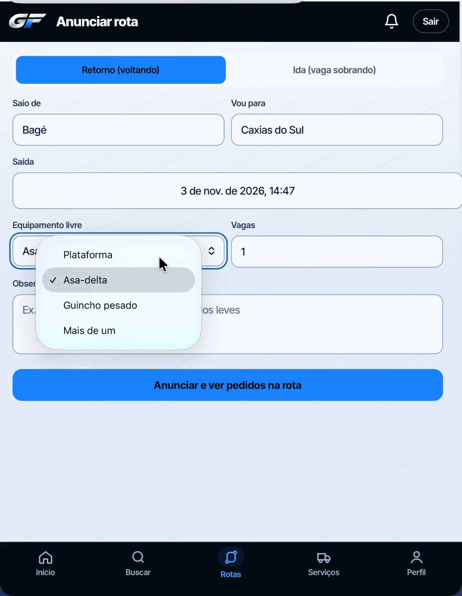
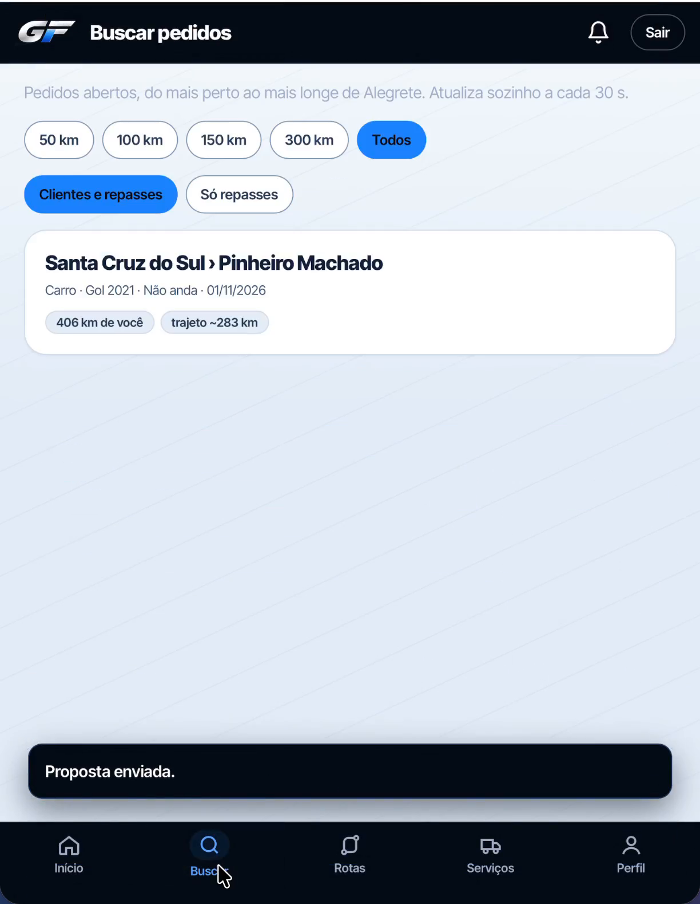
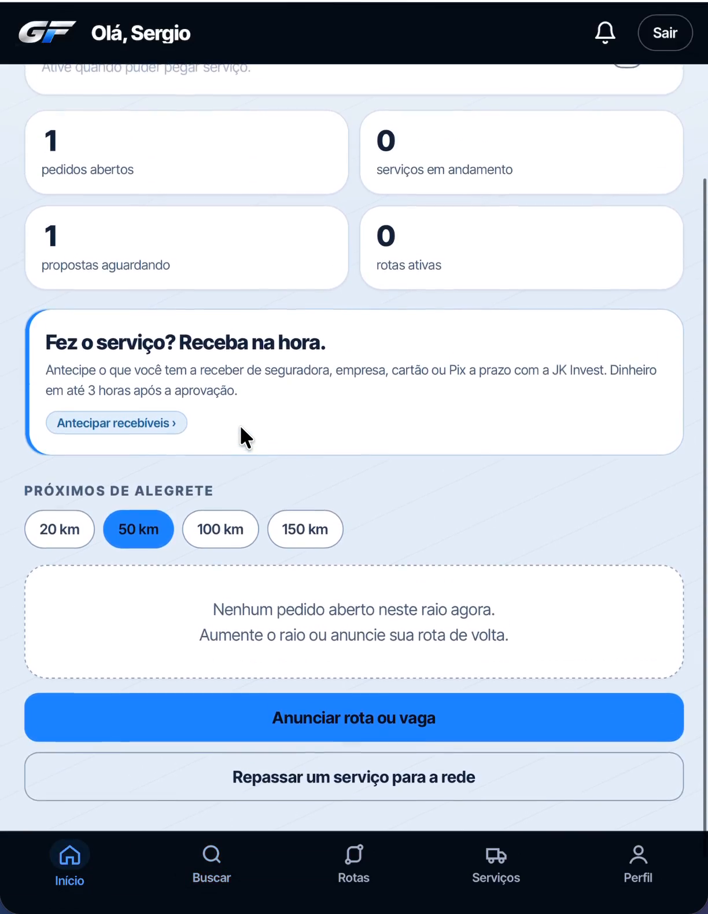
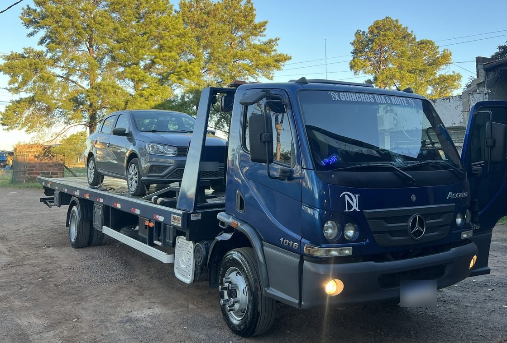

Tua rota não tá aqui? Entra na lista e conta.
Já anunciou tua rota? Leva 1 minuto.
Salve e mande para o parceiro que ainda volta vazio.




Precisa levar um veículo nesse caminho? Pede no GF.
Um exemplo de 250 km de volta.
Exemplo com 250 km, 4 km/l e diesel a R$ 6,20. Sem contar pneu, freio e as horas sem faturar.


Carro, moto, utilitário ou caminhão para outra cidade? Peça uma vez e compare propostas.
Peça a antecipação do que você tem a receber, direto no app. Aprovado, o dinheiro cai em até 3 horas.
Análise, taxa e pagamento feitos pela JK Invest, securitizadora parceira (CNPJ 53.662.389/0001-05). Taxa informada antes da contratação. Sujeito a aprovação. Valores pagos por TED não entram.
Em um mês, guincheiros de [cidades] começaram a anunciar a volta e pegar frete no caminho. Conexões que movem.
[Nome], de [cidade], conta como foi.
Diesel, pedágio, manutenção e imposto numa conta só.
Do pedido à entrega, tudo no celular.